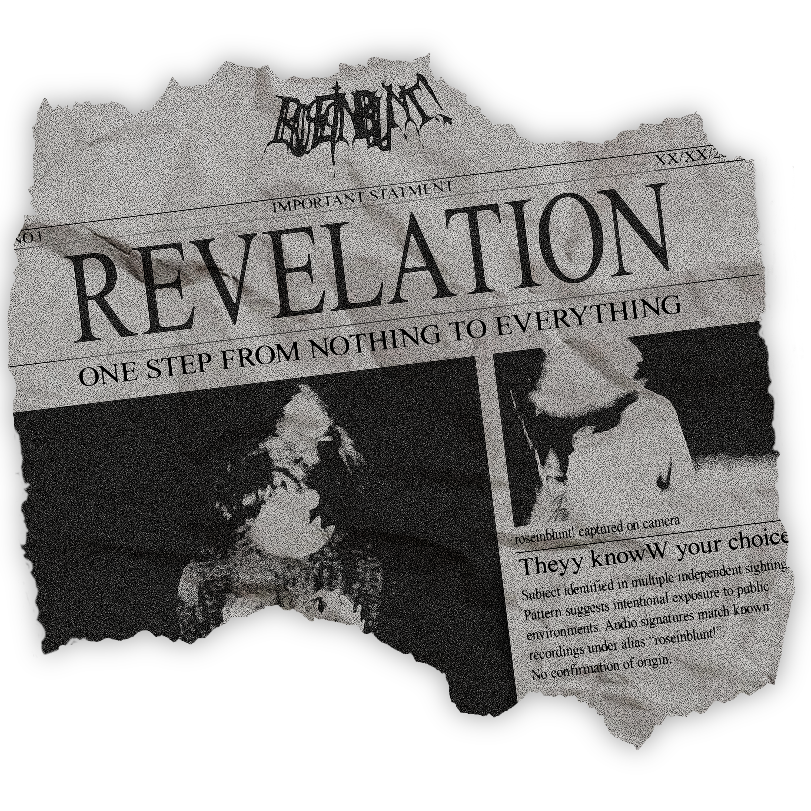

You have been called forth from the ranks of man.
In dreams and in song, the eternal mind spoke to you,
and in discipline and fearlessness, you have taken strides
to reach this holy vestibule of the Dominion.
For in your calling, it is your fate to teach
to the sons of the fallen man the grace and truth
of the new god.
Bow and pray...